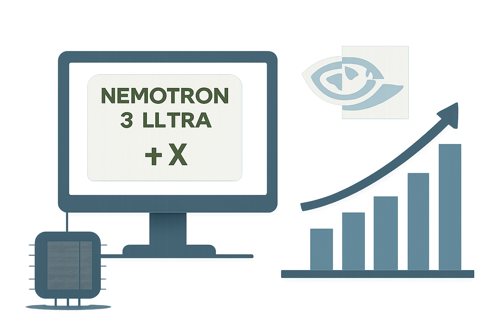

06 arXiv 게시일 2026.09.08
Nemotron 레시피, IMO 금메달선 넘겼다

이 연구는 어려운 수학 문제를 자연어로 푸는 AI 시스템을 다룬다. 목표는 정답만 맞히는 것이 아니라 긴 증명을 끝까지 구성하는 일이다. 연구진은 기본 모델 하나로 밀어붙이지 않았다. 서로 다른 체크포인트와 검증 절차를 조합해 성능을 높였다.
핵심 브리핑
이 시스템은 수학 올림피아드급 증명 문제를 풀기 위한 오픈 모델 파이프라인이다. 형식 증명기나 외부 도구 없이 자연어만으로 작동한다. 인터넷에도 연결하지 않는다.
출발점은 Nemotron 3 Ultra다. 연구진은 여기에 지도 미세조정과 강화학습을 적용해 두 개의 전문 체크포인트를 만들었다. 이후 일반 공개 모델과 두 전문 모델을 함께 써서 후보 풀이를 만들고 검증하고 수정했다.
- 사용한 기반 모델은 Nemotron 3 Ultra다
- 후학습한 전문 체크포인트는 2개다
- 최종 점수는 42점 만점 중 30점이다
- 이는 IMO 2026 금메달 기준에 해당한다
- 새 벤치마크는 올림피아드급 신문제 200개로 구성했다
최종 제출은 별도의 계산 단계가 맡는다. 연구진은 이 단계가 각 문제의 최종 답안을 고르는 역할을 한다고 설명했다. 공개 범위에는 두 체크포인트와 학습 데이터, 학습·추론 코드, 제출 해설, 새 벤치마크가 포함된다.
스펙과 도입 조건
도입 관점에서 가장 눈에 띄는 점은 외부 도구 의존이 없다는 부분이다. 시스템은 자연어만으로 반복 탐색을 수행한다. 그래서 도구 연동 부담은 낮지만, 답을 고르기 위해 추론 단계에서 큰 계산량을 쓴다.
공개 발췌에는 모델 크기와 하드웨어 요구 사항, 라이선스 조건이 나오지 않는다. 따라서 실제 재현 비용은 이번 발췌만으로 판단하기 어렵다. 다만 체크포인트와 코드, 학습 데이터까지 함께 공개한다고 밝혀 재현성은 높이려 했다.
업계의 움직임
발췌에는 경쟁사 대응이나 사용자 반응이 담기지 않았다. 공개 범위가 넓어 연구 커뮤니티의 재현과 비교 실험은 빠르게 늘 가능성이 있다. 아직 공개된 반응은 확인되지 않았다.
시사점과 체크포인트
이 사례는 기본 모델 교체보다 운영 절차 설계가 성능에 큰 영향을 준다는 점을 보여준다. 우리 회사가 문서 심사, 규정 해석, 복잡한 보고서 작성 자동화를 검토할 때도 같은 관점이 필요하다.
검토 대상은 AI플랫폼, 업무혁신, 리스크 관리 조직이다. 초안 생성 모델과 검토 모델을 분리할지, 최종 선택 단계에 추가 계산을 허용할지 먼저 정해야 한다. 정답 검증이 어려운 업무라면 평가 기준부터 다시 설계해야 한다.
주의점도 있다. 이번 성과는 수학 올림피아드라는 좁은 과업에서 나온 결과다. 일반 업무에 그대로 옮길 수 있는지는 별도 검증이 필요하다.
주요 용어
원문 정보
제목: An Open Recipe for IMO Gold: Training Nemotron for Olympiad Mathematics
게시일: 2026.09.08
출처 URL: https://arxiv.org/abs/2609.10712